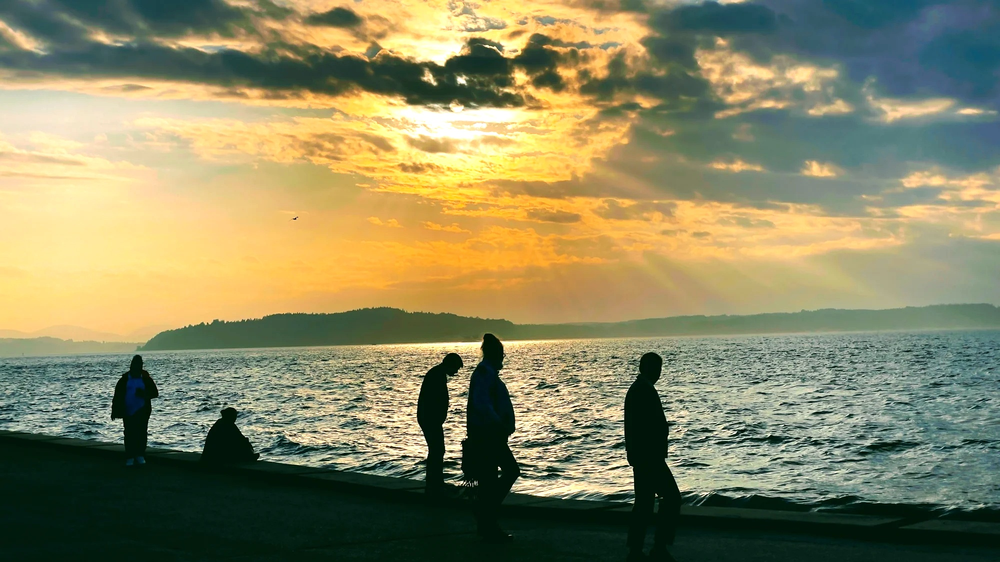
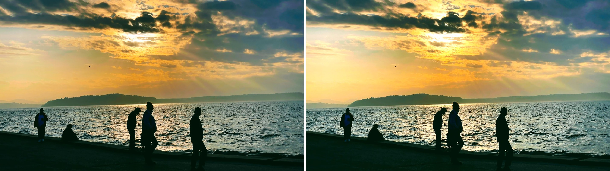

REFRACT
Photography Analysis & Enhancement

IMG_1262-EDIT.jpg
Multi-LLM Analysis
75.0/100
Consensus Score
Original Review
gemini
65.0/100
The photo has a beautiful sunset but is underexposed, particularly in the foreground. Increasing the exposure and bringing out the shadows will reveal more detail.
- Increase exposure by 0.75 stops
- Reduce highlights by 30%
- Increase shadow detail by 25%
openai
85.0/100
The photograph effectively captures a stunning sunset scene with compelling silhouettes. Increasing brightness and contrast will enhance visibility and detail, while cropping will improve compositional balance.
- increase brightness by 10%
- enhance contrast to bring out details in the clouds
- crop slightly from the bottom to position the horizon using the rule of thirds
anthropic
Failed
Analysis failed: Error code: 400 - {'type': 'error', 'error': {'type': 'invalid_request_error', 'message': 'messages.0.content.0.image.source.base64.data: Image does not match the provided media type image/jpeg'}, 'request_id': 'req_011CWmvsxNQ3GmHF23D3Wqg9'}
Combined Improvements Applied:
- Increase exposure by 0.75 stops
- Reduce highlights by 30%
- Increase shadow detail by 25%
- Crop slightly to focus more on the people and golden sky
- increase brightness by 10%
- enhance contrast to bring out details in the clouds
- crop slightly from the bottom to position the horizon using the rule of thirds
Before & After Comparison
Original

Enhanced
Side-by-Side
